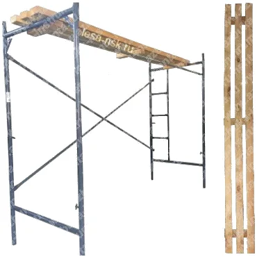
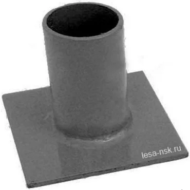
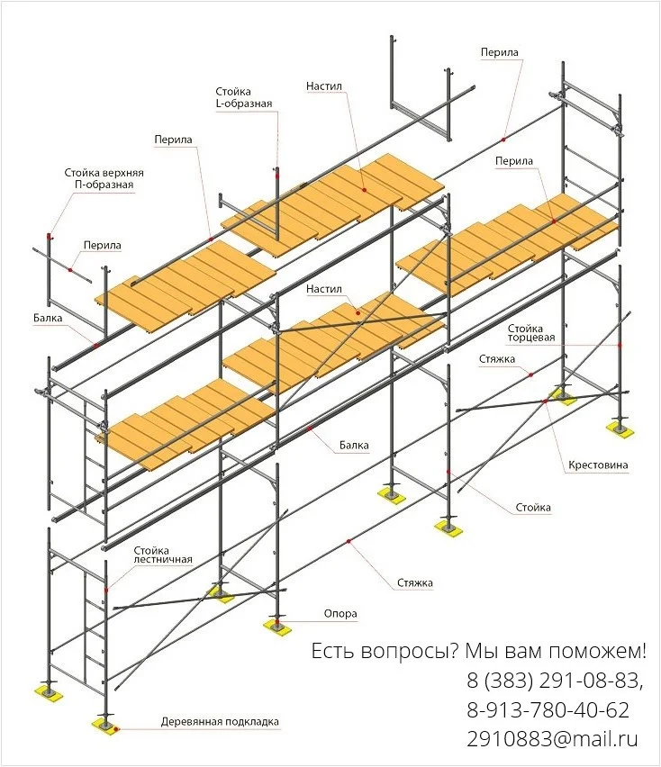

Настил (сборный)
Комплект (настил


|
ЛСПР 30 |
ЛСПР 40 (200) |
ЛСПР 40У |
ЛСПР 60 |
|
|
Высота сборки |
30 м |
40 м |
40 м |
60 м |
|
Нормативная нагрузка |
200кг/м2 |
200кг/м2 |
200 кг/м2 +доп.настил |
200 кг/м2 |
|
Толщина стенки трубы |
1,3 мм |
1,3 мм |
1,5 мм |
2 мм |
|
Высота секции |
2 м |
2 м |
2 м |
2 м |
|
Ширина пролёта |
1 м |
1 м |
1 м |
1 м |
|
Длина секции |
2 м; 3 м |
2 м; 3 м |
3 м |
3 м |
|
Цена за секцию 2 м |
3 750 руб. |
3 790 руб. |
-- |
-- |
|
Цена за секцию 3 м |
4 150 руб. |
4 300 руб. |
4 500 руб. |
5 400 руб. |
Звоните! г. Новосибирск, тел.: +7 (383) 291 08 83
Заявки на расчет принимаются на электронный адрес: 2910883@mail.ru
Леса строительные рамные ЛРСП-30
|
Рамные приставные леса ЛРСП-30 отлично подходят для работы на зданиях с нетипичным фасадом, они легко сочетаются с любыми лесами другого типа. Выполнены из стали и обработаны порошковым полимерным покрытием для защиты от коррозии. Диаметр трубы – 42 мм. Возможна установка лесов отдельными колонами до 30 метров. Колонны связываются друг с другом с помощью хомутов, за счёт чего возможно ими окружить здание даже со сложным фасадом, обойти непрямые углы и радиусы.
|
||||||||||||||||||||||||||||||||||||||||||


Леса строительные ЛСПР-40
|
ЛРСП-40 являются надёжной сборно-разборной конструкцией для проведения различных ремонтных, монтажных и строительных работ на фасаде зданий. Главным преимуществом является высокая скорость сборки с помощью флажковых замков. Леса выполнены из стали, где диаметр труб равен 42 мм, а для защиты от коррозии они обработаны полимерным порошковым покрытием. Благодаря небольшому весу и малому количеству деталей, такие леса удобны для транспортировки и хранения.
|
||||||||||||||||||||||||||||||||||||||||||||||||


|
Леса строительные ЛРСП-40У (усиленные)
Леса строительные ЛРСП-60
КОМПЛЕКТУЮЩИЕ К СТРОИТЕЛЬНЫМ ЛЕСАМ Настилы для строительных лесов
Подпятник и кронштейны
|
||||||||||||||||||||||||||||||||||||||||||||||||||||||||||||||||||||||||||||||||||||||||